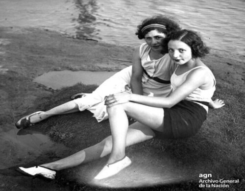

Archivo 1
Trabajadoras de Telesud S.A. Televisores Zenith. San Martín, provincia de Buenos Aires,1947.
Archivo 2
Amigas charlando en el balneario municipal de Vicente López. Provincia de Buenos Aires, 1935.


Trabajadoras de Telesud S.A. Televisores Zenith. San Martín, provincia de Buenos Aires,1947.
Amigas charlando en el balneario municipal de Vicente López. Provincia de Buenos Aires, 1935.